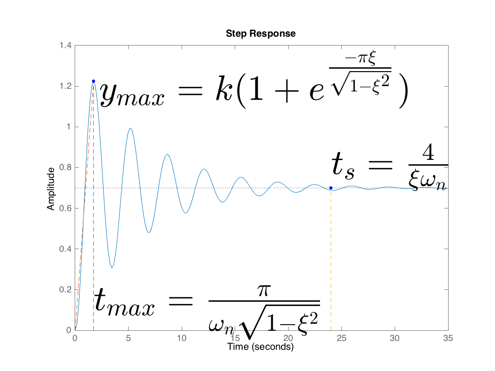

performance highlighting
close all
h = tf(7, [3 1 10]);
k = 7/10;
wn = sqrt(10/3);
df = 1/3/2/wn;
step(h);
hold;
sigma = k*exp(-pi*df/sqrt(1-df^2));
ymax = k*(1+exp(-pi*df/sqrt(1-df^2)));
tmax = pi/wn/sqrt(1-df^2);
plot(tmax,ymax,'.b', 'MarkerSize', 20);
plot([tmax tmax], [0 ymax], '--')
plot([0 tmax], [0 ymax], '--')
s = '$y_{max} = k(1+e^\frac{-\pi\xi}{\sqrt{1-\xi^2}})$' ;
text(tmax + 0.5, ymax, s, 'Interpreter', 'Late', 'FontSize', 40);
s = '$t_{max}=\frac{\pi}{\omega_n\sqrt{1-\xi^2}} $' ;
text(tmax, 0.1, s, 'Interpreter', 'Latex', 'FontSize', 40);
ts = 4/df/wn;
s = '$t_s=\frac{4}{\xi\omega_n}$';
text(4/df/wn, k+0.1, s, 'Interpreter', 'Latex', 'FontSize', 40, 'FontWeight', 'bold')
plot(4/df/wn, k, '.b', 'MarkerSize', 20);
plot([4/df/wn 4/df/wn], [0 k], '--');shg
Current plot held
